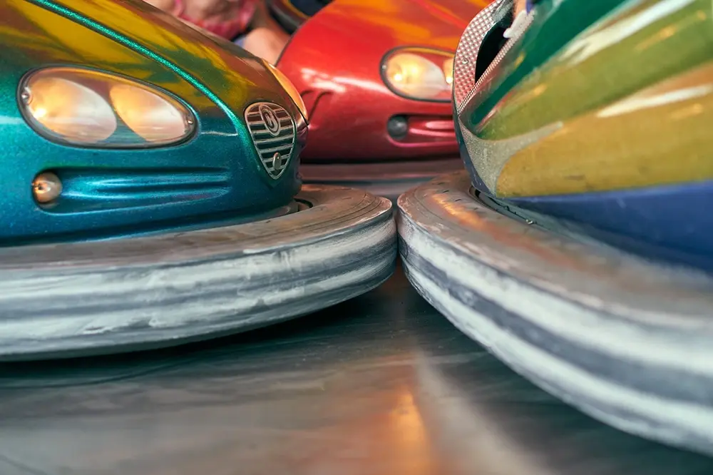

🌔
Home
Advocacy
Resources
Events
Number of Visits:
Demographics
Population of 17.6k People
Median Age of 37.8
Median Household Income of $55,944
Upcomming Events
Corn Maze
Turkey Bowl
Thanksgiving Parade
Local Attractions
Hiking Trail
Water Park
Zoo
Picking Up Peppers at the Farmer's Market
Playing Fetch in the Local Park
Saying Hello to Our Polar Bear Freind at the Zoo
Check Out the Slide at Our Water Park
Breaking a Sweat at the Gym

1.. 2.. 3.. GO!